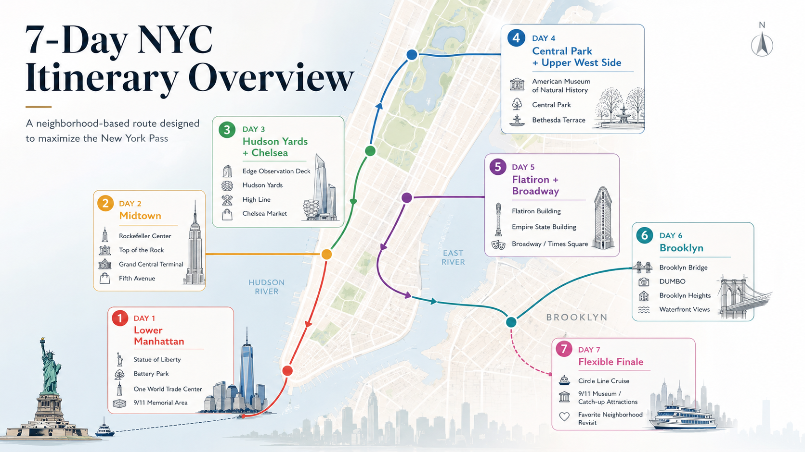

The smartest way to maximize your New York Pass without spending your vacation rushing between attractions.
This Isn’t Just Another 7-Day NYC Itinerary
Search for a “7-day New York itinerary” and you’ll find dozens of guides claiming you can visit 30 attractions in a week. Technically, they’re not wrong. Realistically? You’ll spend more time on the subway than actually enjoying New York.
This guide takes a different approach. Instead of asking “How many attractions can I fit into seven days?” it asks “How can I get the most value from the New York Pass while actually enjoying New York?”
That means you’ll visit the city’s biggest attractions, save money with the New York Pass, avoid unnecessary backtracking, spend less time commuting, and keep enough flexibility for weather, reservation changes, and spontaneous discoveries. By the end of the week, you’ll have experienced New York — not just checked attractions off a list.
- Who This Is For
- 3 Things Most People Get Wrong
- Reserve These Attractions First
- How to Maximize the New York Pass
- Day 1 — Lower Manhattan
- Day 2 — Midtown East
- Day 3 — Hudson Yards & Chelsea
- Day 4 — Upper West Side
- Day 5 — Flatiron & Broadway
- Day 6 — Brooklyn
- Day 7 — Flexible Finale
- Reservation Cheat Sheet
- Common Mistakes
- FAQ
Who This Itinerary Is For
- First-time visitors to New York City
- Travelers who purchased a 7-Day New York Pass
- Couples and solo travelers
- Families with older children
- Visitors who enjoy walking
- Anyone who wants maximum value without feeling rushed
- You prefer spending half a day inside a single museum
- You have significant mobility limitations
- You only want Broadway shows and restaurants
- You’re staying for fewer than six full sightseeing days
In those cases, a shorter pass — or even buying individual attraction tickets — may be the better choice.
Before You Start: Three Things Most People Get Wrong
1. The New York Pass Doesn’t Eliminate Planning
One of the biggest misconceptions is that buying the pass means you can simply show up everywhere. That’s no longer how many of New York’s most popular attractions work. Several headline attractions require advance reservations, even if admission is included with your pass. If you wait until you’re already in New York, you may find that your preferred time slots are no longer available.
2. More Attractions Doesn’t Always Mean Better Value
Many travelers try to “beat the pass” by squeezing in five or six attractions every day. In reality, that’s often the fastest way to become exhausted. The biggest value doesn’t come from visiting the most attractions — it comes from visiting the right attractions while minimizing travel time between them. That’s exactly how this itinerary is designed.
3. New York Is Bigger Than It Looks
On a map, everything seems close together. In reality, crossing Manhattan takes time, attractions have security lines, observation decks use timed entry, ferries operate on schedules, and museums are much larger than most people expect. A realistic itinerary will almost always beat an overly ambitious one.
Reserve These Attractions First
As soon as you’ve purchased your New York Pass, reserve the attractions that are hardest to book.
| Priority | Attraction | Why |
|---|---|---|
| 🔴 Highest | Statue of Liberty & Ellis Island Ferry | Popular morning departures fill quickly |
| 🔴 Highest | Top of the Rock | Sunset and late-afternoon slots in high demand |
| 🔴 Highest | Edge | Timed entry; reservations open up to 10 days ahead |
| 🟠 High | Best of NYC Circle Line Cruise | Prime sailing times can sell out |
| 🟠 High | 9/11 Museum | Timed entry required |
| 🟡 Medium | Empire State Building | Reserve early for your preferred time |
| 🟡 Medium | Guided Walking Tours | Many have limited group sizes |
Don’t wait until you arrive in New York. Reserve your highest-priority attractions first, then build the rest of your itinerary around those confirmed times. The Go City app lets you manage reservations for many included attractions, while some experiences have separate booking instructions.
Attractions Deliberately Left Out
These attractions can be fun, but they’re not the best use of your time on a first trip: Madame Tussauds, Color Factory, SPYSCAPE, RiseNY, Museum of Broadway, Paley Museum, Museum of the City of New York. If one of those genuinely interests you, Day 7 gives you the flexibility to swap it in.
How This Itinerary Was Built
Stay in One Neighborhood
Each day focuses on one area. Less time underground, more time exploring.
Prioritize High-Value Attractions
The most expensive attractions are spread throughout the week so you maximize value without burning out.
Balance Busy Days with Relaxed Days
Central Park and Brooklyn come later, when most visitors appreciate a slower pace.
Leave Room for Flexibility
Weather changes. Reservations change. Energy levels change. This itinerary adapts.
Your 7-Day Itinerary at a Glance
| Day | Neighborhood | Main Pass Attractions |
|---|---|---|
| Day 1 | Lower Manhattan | Statue of Liberty, One World Observatory |
| Day 2 | Midtown East | MoMA, Top of the Rock |
| Day 3 | Hudson Yards & Chelsea | Edge, High Line, Intrepid (Optional) |
| Day 4 | Upper West Side | American Museum of Natural History |
| Day 5 | Midtown South & Broadway | Empire State Building |
| Day 6 | Brooklyn | Brooklyn Bridge & DUMBO |
| Day 7 | Flexible | Circle Line Cruise, 9/11 Museum or Bonus Attractions |

Don’t treat this itinerary as a checklist. Treat it as a framework. If you fall in love with Greenwich Village, spend another hour there. If rain forces you to swap two days, that’s perfectly fine. The New York Pass is a fantastic way to save money — but the goal isn’t to maximize the pass. The goal is to maximize your trip.
Get Your New York Pass
The 7-day New York Pass gives you access to 100+ attractions — including all the headline experiences in this itinerary. Reserve yours through Viator with free cancellation on most bookings.
Get the New York Pass on ViatorHow to Get the Most Value from the New York Pass
How Many Attractions Should You Visit Per Day?
| Attractions / Day | Verdict |
|---|---|
| 1 | ❌ Usually poor value for a 7-day pass |
| 2 | ✅ Comfortable and realistic |
| 3 | ⭐ Ideal for most sightseeing days |
| 4 | ⚠️ Only if they’re close together |
| 5+ | ❌ Usually too rushed |
Observation decks, museums and cruises often take much longer than people expect. It’s far better to fully enjoy three attractions than to sprint through six.
The Reservation Strategy
- Reserve your highest-priority attractions first:
- Write those confirmed reservation times into your itinerary.
- Build the rest of each day around those reservations. Don’t do it the other way around.
Understanding the Pace
| Day | Pace | Walking |
|---|---|---|
| Day 1 | Busy | 9–11 km |
| Day 2 | Busy | 8–10 km |
| Day 3 | Moderate | 7–9 km |
| Day 4 | Relaxed | 6–8 km |
| Day 5 | Moderate | 7–9 km |
| Day 6 | Relaxed | 8–10 km |
| Day 7 | Flexible | Flexible |
The trips people enjoyed most weren’t the ones that squeezed in the highest number of attractions. They were the ones that mixed busy sightseeing days with slower neighborhood days. Wear comfortable shoes — you’ll walk 50–60 km over the week.
Rain on Day 6? Move Brooklyn to Day 7. Clear skies tomorrow? Bring Edge forward. Because this itinerary organizes by neighborhood, swapping two complete days never requires rebuilding the whole plan.
Purchase & Activate Your New York Pass First
You need your pass details before making reservations for eligible attractions. Reserve yours on Viator, then use the Go City app to lock in your attraction time slots.
Get the New York Pass on ViatorLower Manhattan: Statue of Liberty, Financial District & One World Observatory
New York’s history, iconic landmarks, and your first unforgettable skyline view.The Statue of Liberty is the most reservation-sensitive attraction in this itinerary, so it makes sense to visit it first while energy levels are high. Once you’re back in Manhattan, everything else is within walking distance — Wall Street, the 9/11 Memorial and One World Observatory — so you’ll spend very little time on public transport. Statue of Liberty reservations for New York Pass holders can be made up to 7 days in advance, while One World Observatory generally has more flexible entry procedures.
Today’s Schedule
| Time | Activity | Notes |
|---|---|---|
| 8:00 AM | Arrive at Battery Park | Aim to arrive at least 30 minutes before your ferry departure. Security screening is similar to an airport. |
| 8:30–11:30 AM | ⭐ Statue of Liberty & Ellis Island | Reserve in advance. Most visitors spend 2.5–3 hours including ferry rides. |
| 11:45 AM | Lunch | Stone Street is the top recommendation for a relaxed lunch after the ferry. |
| 1:00 PM | Charging Bull & Fearless Girl | Quick photo stop. Expect crowds. |
| 1:20 PM | Wall Street & NYSE | Walk through the Financial District. |
| 2:00 PM | Trinity Church | One of Lower Manhattan’s most historic landmarks. |
| 2:30 PM | 9/11 Memorial | Spend time here even if you’re visiting the museum on another day. |
| 3:30 PM | Oculus | Great architecture and a convenient coffee stop. |
| 4:30–6:00 PM | ⭐ One World Observatory | Visit in the late afternoon for daylight views that transition toward sunset. |
| Evening | Dinner in FiDi or Tribeca | Stay downtown instead of returning to Midtown. |
- Reserve the Statue of Liberty ferry as soon as your booking window opens.
- If your ferry time changes, simply shift the afternoon by the same amount.
Best Food Stops
- Pisillo Italian Panini
- Luke’s Lobster
- Stone Street
- Adrienne’s Pizza Bar
- Blue Bottle Coffee (FiDi)
Best Photo Spots
- 📷 Statue of Liberty
- 📷 Ellis Island
- 📷 Charging Bull
- 📷 Oculus
- 📷 One World Observatory
Optional Add-Ons
- Fraunces Tavern
- South Street Seaport
- Brooklyn Bridge (view only)
Skip Today
- ❌ Brooklyn Bridge walk (covered on Day 6)
- ❌ Chinatown
- ❌ SoHo
- ❌ Midtown (covered on Days 2 & 5)
Midtown East: Rockefeller Center, MoMA & Top of the Rock
Classic Midtown landmarks, world-class art, and New York’s best observation deck.Today’s route follows a simple loop through Midtown East. You’ll begin indoors at MoMA (ideal in the morning), then explore Rockefeller Center, Fifth Avenue and Bryant Park before finishing with a timed visit to Top of the Rock. Sunset reservations are among the most sought-after, so book them as early as possible. Pass holders can reserve Top of the Rock up to 10 days in advance through the Go City app.
Today’s Schedule
| Time | Activity | Notes |
|---|---|---|
| 9:00–11:00 AM | ⭐ MoMA | Focus on the highlights rather than trying to see every gallery. |
| 11:10 AM | Rockefeller Center Plaza | Explore the plaza and Channel Gardens. |
| 11:40 AM | St. Patrick’s Cathedral | Free to enter. One of Midtown’s architectural highlights. |
| 12:15 PM | Fifth Avenue | Browse shops or simply enjoy the walk. |
| 1:00 PM | Lunch | Midtown East has excellent restaurants within a few blocks. |
| 2:15 PM | Bryant Park | Relax with a coffee before continuing. |
| 2:45 PM | New York Public Library | Step inside the Rose Main Reading Room if it’s open. |
| 3:30 PM | Grand Central Terminal | Explore the Main Concourse and Vanderbilt Hall. |
| 5:30 PM | Return to Rockefeller Center | Grab an early dinner or coffee before your reservation. |
| 6:30–8:00 PM | ⭐ Top of the Rock | Reserve a slot about 45–60 minutes before sunset for the best lighting. |
- Book your sunset reservation as early as possible.
- Arrive 15–20 minutes before your entry time.
- Timed reservations are generally enforced during busy periods.
Best Food Stops
- UrbanSpace Vanderbilt
- The Smith
- Café China
- Bryant Park cafés
Best Photo Spots
- 📷 Rockefeller Center
- 📷 St. Patrick’s Cathedral
- 📷 Bryant Park
- 📷 Grand Central Terminal
- 📷 Top of the Rock
Skip Today
- ❌ Empire State Building (Day 5)
- ❌ Times Square (Day 5)
- ❌ Hudson Yards (Day 3)
Hudson Yards, Chelsea & the High Line
Modern New York, skyline views, waterfront parks, and one of the city’s best urban walks.After two sightseeing-heavy days, today’s itinerary slows the pace without sacrificing value. Rather than hopping between different parts of Manhattan, you’ll spend the entire day walking south through one connected neighborhood: Hudson Yards → High Line → Chelsea Market → Little Island. No unnecessary subway rides. No backtracking. Just one of the most enjoyable walks in New York.
Today’s Schedule
| Time | Activity | Notes |
|---|---|---|
| 8:30 AM | Arrive at Hudson Yards | Plan to arrive 15–20 minutes before your Edge reservation. Reservations open up to 10 days in advance. |
| 9:00–10:30 AM | ⭐ Edge Observation Deck | Spend 60–90 minutes. Visit both indoor viewing area and outdoor sky deck. Don’t skip the glass floor. |
| 10:30–10:45 AM | The Vessel (Exterior) | Stop for photos. Exterior access always worthwhile. |
| 10:45 AM–12:00 PM | Walk the High Line | Start at Hudson Yards and walk south. Gardens, public art and city views throughout. |
| 12:00–1:15 PM | Lunch at Chelsea Market | One of the best places in Manhattan for a relaxed lunch. Arriving around noon helps avoid the biggest crowds. |
| 1:15–2:00 PM | Explore Chelsea Market | Browse specialty food shops, bakeries and local boutiques. |
| 2:10–3:00 PM | Little Island | Relax by the waterfront, enjoy the gardens or take in the Hudson River views. |
| 3:15 PM onward | Optional: Intrepid Museum or Hudson River Park | Intrepid is included with the pass. Otherwise, continue strolling along Hudson River Park. |
Sunset is absolutely worth it if you can secure the reservation. Simply change the order: Morning: High Line — Afternoon: Chelsea Market + Little Island — Evening: Edge at Sunset. You’ll have a relaxed lunch, enjoy Chelsea at your own pace, and finish with one of the best skyline views in New York.
- Reserve Edge as soon as your booking window opens.
- Arrive at least 15–20 minutes early for your timed entry.
- Morning visits are usually less crowded and often provide clearer views.
Best Food Stops
- Los Tacos No. 1
- Very Fresh Noodles
- Miznon
- Lobster Place
- Friedman’s
- Seed + Mill
- Amy’s Bread
Skip Today
- ❌ Times Square
- ❌ Empire State Building
- ❌ Central Park
- ❌ Financial District
Upper West Side & Central Park
Slow down, explore New York’s most famous park, and visit one of the world’s greatest natural history museums.By Day 4, you’ve already explored Lower Manhattan, Midtown, and Hudson Yards. This is the perfect point in your trip to slow the pace. Since the museum sits directly beside Central Park, you can walk between every stop without needing to navigate the subway again. It’s one of the easiest and most relaxing days of the itinerary.
Today’s Schedule
| Time | Activity | Notes |
|---|---|---|
| 9:30 AM | Arrive at AMNH | Museum opens at 10:00 AM daily. Arriving early helps you beat the largest crowds. |
| 10:00 AM–1:00 PM | ⭐ American Museum of Natural History | Prioritize: Dinosaur Fossils, Hall of Ocean Life, Gems & Minerals, Gilder Center, Theodore Roosevelt Rotunda. |
| 1:00–2:00 PM | Lunch on the Upper West Side | Eat before entering Central Park. |
| 2:00 PM | Enter Central Park at 77th–81st Street | Already beside the park — no additional transport needed. |
| 2:15 PM | Belvedere Castle | One of Central Park’s best viewpoints. |
| 2:45 PM | The Great Lawn | A great place for a short break in good weather. |
| 3:15 PM | Shakespeare Garden (Optional) | A peaceful detour if you’re enjoying the slower pace. |
| 3:45 PM | Bethesda Terrace & Fountain | One of Central Park’s most iconic landmarks — spend time here, don’t just photograph and move on. |
| 4:15 PM | Bow Bridge | The best photo spot in Central Park. |
| 4:45 PM | The Lake | Relax and enjoy one of the park’s most scenic areas. |
| 5:30 PM+ | Dinner on the Upper West Side | Columbus Avenue and Amsterdam Avenue have excellent restaurants. |
Many itineraries make the mistake of treating Central Park as somewhere you simply walk through on the way to another attraction. Don’t do that. By giving yourself an unhurried afternoon here, you’ll experience a side of New York that many visitors miss entirely.
Best Food Stops
- Daily Provisions
- Shake Shack (Columbus Ave)
- Jacob’s Pickles
- The Smith
- Joe Coffee
- Bluestone Lane
Optional Add-Ons (choose one)
- Strawberry Fields
- Sheep Meadow
- Alice in Wonderland Statue
- Conservatory Water
- The Mall & Literary Walk
Skip Today
- ❌ Times Square
- ❌ Empire State Building
- ❌ Hudson Yards
- ❌ Lower Manhattan
- ❌ Brooklyn
Flatiron, NoMad, Empire State Building & Broadway
Classic Midtown landmarks, the Empire State Building, and an unforgettable Broadway evening.Today’s route connects three neighborhoods that naturally flow into one another: Flatiron → NoMad → Empire State Building → Bryant Park → Times Square → Broadway. This itinerary passes through Herald Square on the way north, giving you more time to enjoy the Empire State Building, relax in Bryant Park, and soak up the Theater District atmosphere.
Today’s Schedule
| Time | Activity | Notes |
|---|---|---|
| 9:00 AM | Arrive at Madison Square Park | Start the morning in one of Midtown’s most pleasant parks. |
| 9:00–9:45 AM | Madison Square Park & Flatiron Building | Walk around the park and photograph the Flatiron from different angles. |
| 10:00–11:30 AM | Explore NoMad | Wander through the neighborhood and nearby side streets at a relaxed pace. |
| 11:45 AM–1:00 PM | Lunch | Flatiron and NoMad have excellent lunch options without Times Square crowds. |
| 1:15 PM | Walk toward the Empire State Building | About 10–15 minutes on foot. |
| 1:30–3:00 PM | ⭐ Empire State Building Observatory | Reserve through the Go City app before your trip. Timed reservations required. |
| 3:15 PM | Herald Square (Optional) | Walk through if interested in shopping. Otherwise continue to Bryant Park. |
| 3:45–4:45 PM | Bryant Park | Grab a coffee, relax on the lawn or enjoy one of Midtown’s best public spaces. |
| 4:45 PM | Walk through Times Square | Experience the energy without feeling pressured to stay for hours. |
| 5:30 PM | Early Dinner | Eat before your Broadway show rather than afterward when restaurants are busiest. |
| 7:00 or 8:00 PM | Broadway Show (Optional but Highly Recommended) | Book tickets in advance or check TKTS for same-day discounts. |
- Reserve the Empire State Building before your trip. Timed entry is required for New York Pass users.
- Arrive around 15–20 minutes early for your reservation.
- If you’re seeing a Broadway show, leave at least 60–90 minutes between the observation deck and curtain time.
Best Food Stops
- Eataly NYC Flatiron
- Daily Provisions
- The Smith
- Scarpetta (splurge)
- Becco (pre-Broadway)
- Joe Allen (pre-Broadway)
- Carmine’s (groups)
Brooklyn Bridge, DUMBO & Brooklyn Heights
Iconic skyline views, historic Brooklyn neighborhoods, and one of New York’s best ferry rides.After several days of museums and observation decks, today is all about experiencing New York beyond the major attractions. You’ll explore Brooklyn at a slower pace, moving naturally from the Brooklyn Bridge into DUMBO, Brooklyn Bridge Park and Brooklyn Heights before returning to Manhattan on the NYC Ferry — one of the most memorable ways to end a Brooklyn day.
Today’s Schedule
| Time | Activity | Notes |
|---|---|---|
| 8:30 AM | Arrive at City Hall | Starting from the Manhattan side lets you experience the Brooklyn Bridge in its most iconic direction. |
| 8:45–9:30 AM | Walk the Brooklyn Bridge | Walk at a relaxed pace and stop often for photos. Early morning offers fewer crowds and softer light. |
| 9:30–10:30 AM | Explore DUMBO | Wander Washington Street, Pebble Beach and the waterfront. |
| 10:30–11:30 AM | Brooklyn Bridge Park | Follow the waterfront south while enjoying uninterrupted skyline views. |
| 11:45 AM–1:00 PM | Lunch in DUMBO | Enjoy a relaxed lunch before continuing to Brooklyn Heights. |
| 1:15–2:30 PM | Brooklyn Heights Promenade | One of the city’s finest free viewpoints overlooking Lower Manhattan and New York Harbor. |
| 2:30–3:30 PM | Explore Brooklyn Heights | Walk the quiet brownstone-lined streets at your own pace. |
| 3:45 PM | Walk to Pier 1 or Fulton Ferry Landing | Follow signs to the NYC Ferry terminal. |
| 4:00 PM+ | NYC Ferry to Wall Street / Pier 11 | A scenic ferry ride gives you another incredible view of Lower Manhattan and the Brooklyn Bridge — far more memorable than the subway. |
| Evening | Dinner in the Financial District or hotel | If staying in Midtown, continue by subway after arriving at Pier 11. |
Best Food Stops
- Time Out Market
- Juliana’s Pizza
- Celestine
- The River Café (splurge)
- Butler
- % Arabica
Flexible Finale: Cruise, Museums & Your Favorite Neighborhood
Use your final day to fill the gaps, revisit your favorite neighborhood, and end your trip without rushing.No matter how carefully you plan, something almost always changes during a week in New York. Maybe it rained. Maybe your Edge reservation wasn’t available until another day. Maybe you unexpectedly fell in love with Greenwich Village and wanted to go back. That’s exactly why Day 7 is intentionally flexible.
The Full Finale
Circle Line Cruise in the morning, 9/11 Museum in the afternoon, then revisit your favorite neighborhood to close the trip.
Missed an Attraction?
Edge, Top of the Rock, Empire State Building, Statue of Liberty (if weather caused cancellations), AMNH, Intrepid Museum.
Just Enjoy New York
Greenwich Village, SoHo, Central Park, Fifth Avenue shopping, a long lunch, a rooftop bar, the Hudson River Greenway. Sometimes the best final day is the one with no schedule at all.
Option A Schedule
| Time | Activity | Notes |
|---|---|---|
| 9:30 AM | Relaxed Breakfast | Don’t rush. Today is intentionally slower. |
| 10:30 AM–12:30 PM | ⭐ Best of NYC Circle Line Cruise | One of the highest-value attractions included with the pass. Reserve in advance — popular departures fill quickly. |
| 1:00 PM | Lunch | Eat near the cruise terminal or head to Hell’s Kitchen. |
| 2:30–4:30 PM | ⭐ 9/11 Memorial & Museum | Allow around two hours. Timed reservations required through the Go City app. |
| 5:00 PM+ | Return to your favorite neighborhood | Revisit the place you loved most during the week. |
| Evening | Farewell Dinner | Celebrate the end of your New York adventure. |
- Reserve the Circle Line Cruise before your trip. Popular sailing times fill up, especially in spring and summer.
- If visiting the 9/11 Museum, book your timed entry before arriving in New York.
- Leave extra time if you’re flying home today. Airport travel from Manhattan can easily take longer than expected.
Your Complete 7-Day Itinerary at a Glance
| Day | Neighborhood | Main Pass Attractions | Walking | Pace |
|---|---|---|---|---|
| Day 1 | Lower Manhattan | Statue of Liberty, One World Observatory | 9–11 km | ⭐⭐⭐⭐ |
| Day 2 | Midtown East | MoMA, Top of the Rock | 8–10 km | ⭐⭐⭐⭐ |
| Day 3 | Hudson Yards & Chelsea | Edge | 7–9 km | ⭐⭐⭐ |
| Day 4 | Upper West Side | American Museum of Natural History | 6–8 km | ⭐⭐ |
| Day 5 | Flatiron, NoMad & Broadway | Empire State Building | 7–9 km | ⭐⭐⭐ |
| Day 6 | Brooklyn | DUMBO, Brooklyn Bridge, Brooklyn Heights | 8–10 km | ⭐⭐⭐ |
| Day 7 | Flexible | Circle Line Cruise, 9/11 Museum or Catch-Up | Flexible | ⭐⭐ |
Reservation Cheat Sheet
Buying the pass doesn’t automatically guarantee entry. Several of the most popular attractions require advance reservations even if admission is included.
| Attraction | Reservation Required | Recommended Booking Time |
|---|---|---|
| Statue of Liberty Ferry | ✅ Yes | As soon as your 7-day booking window opens |
| Edge | ✅ Yes | As soon as your 10-day booking window opens |
| Top of the Rock | ✅ Yes | As soon as your 10-day booking window opens |
| Empire State Building | ✅ Yes | Before arriving in NYC |
| 9/11 Museum | ✅ Yes | Up to 14 days ahead |
| Circle Line Cruise | Recommended | Several days ahead during busy seasons |
| American Museum of Natural History | Usually not required (verify) | — |
| One World Observatory | Check Go City app instructions | — |
Statue of Liberty → Edge → Top of the Rock → Empire State Building → 9/11 Museum → Circle Line Cruise. Everything else can be planned around those reservations.
Common Mistakes to Avoid
Activating Your Pass Too Late
Every pass day ends at midnight, not 24 hours after activation. Start as early as possible to maximize value.
Waiting Too Long to Make Reservations
Buying the pass doesn’t reserve your attractions. Popular time slots — especially sunset observation decks — can disappear quickly.
Visiting Neighborhoods Out of Order
Don’t bounce between Central Park, the Financial District, and Hudson Yards in one day. Cluster attractions geographically instead.
Trying to Visit Every Observation Deck
You don’t need Edge, Empire State Building, Top of the Rock and One World Observatory on consecutive days. Spacing them out makes each one feel special.
Spending Too Much Time in Times Square
Visit it, take your photos, move on. There are far better places to spend your afternoon.
Forgetting About Security Lines
Observation decks, ferries and major attractions all require security screening. Always arrive early.
Underestimating Walking
You’ll walk 50–60 km over seven days. Comfortable shoes aren’t optional.
Chasing “Free” Attractions Just Because They’re Included
Included doesn’t automatically mean worthwhile. Choose experiences you’ll genuinely enjoy.
Filling Every Hour of Every Day
Leave room for coffee breaks, unexpected discoveries, great restaurants and relaxing in parks. Those moments often become the highlights.
Skipping the Flexible Day
Day 7 is your insurance policy against weather, reservation changes and spontaneous discoveries. Don’t pre-fill it.
Is This Itinerary Right for You?
| This itinerary is perfect if… | You may want a different itinerary if… |
|---|---|
| It’s your first visit to NYC | You’ve already visited NYC several times |
| You’re buying the New York Pass | You’re not using an attraction pass |
| You enjoy walking | You prefer taxis everywhere |
| You want a balanced trip | You’re focused mainly on shopping |
| You like sightseeing | You’re planning multiple Broadway shows |
Get Your 7-Day New York Pass
This itinerary is built around the 7-Day New York Pass — the best option if you plan to visit several major attractions every day. Reserve yours on Viator and start making reservations before the best time slots fill up.
Get the New York Pass on ViatorFrequently Asked Questions
Is the 7-Day New York Pass worth it?▾
How many attractions should I visit each day?▾
Can I visit the same attraction twice?▾
Do I need to reserve attractions?▾
Does the pass include subway rides?▾
Can I change the order of the days?▾
What happens if it rains?▾
Is this itinerary suitable for families?▾
Should I buy the pass before booking attractions?▾
How early should I start each day?▾
Final Thoughts
There are hundreds of ways to spend seven days in New York. This itinerary isn’t designed to help you visit the greatest number of attractions — it’s designed to help you have the best possible week while getting outstanding value from the New York Pass.
By organizing each day around neighborhoods instead of random landmarks, reserving popular attractions in advance, and leaving room for flexibility, you’ll spend less time riding the subway and more time actually experiencing New York.
If you only take one piece of advice from this guide: don’t try to do everything. Do the right things, in the right order. That’s the difference between a stressful sightseeing checklist and a trip you’ll remember for years.